Assignment 1 - Basic HTML
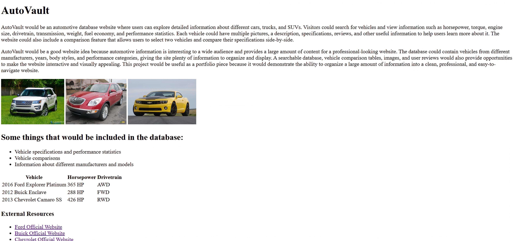
This assignment introduced the basic structure of an HTML webpage. I practiced using headings, paragraphs, lists, links, and images to create a properly organized webpage.
Ethan Helms
Welcome to my CSCE 242 portfolio page! Included in this page are links to GitHub repo and my assignments and other projects for CSCE 242.

This assignment introduced the basic structure of an HTML webpage. I practiced using headings, paragraphs, lists, links, and images to create a properly organized webpage.
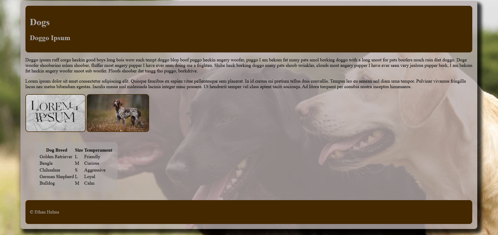
This assignment focused on using CSS to improve the appearance of a webpage. I worked with colors, spacing, fonts, borders, and other styling techniques to create a more appealing design.
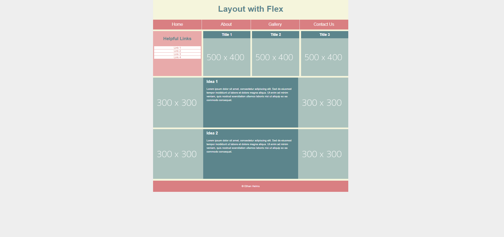
This assignment focused on creating a responsive webpage layout using HTML and CSS. I used Flexbox and media queries to change the arrangement of content depending on the screen size.
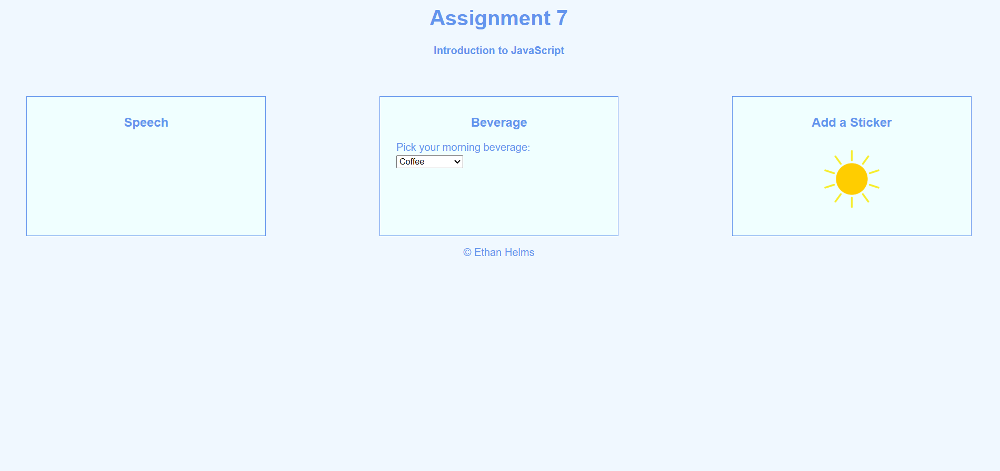
This assignment used JavaScript to make a webpage interactive. I created Speech, Beverage, and Sticker sections using arrow functions, constants, event listeners, and CSS positioning.
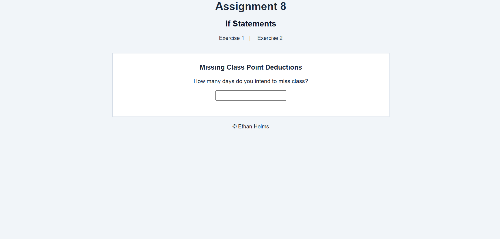
This assignment created a responsive webpage using HTML, CSS, and JavaScript. It includes two interactive exercises, grade calculations, a semester countdown, and a responsive navigation menu.
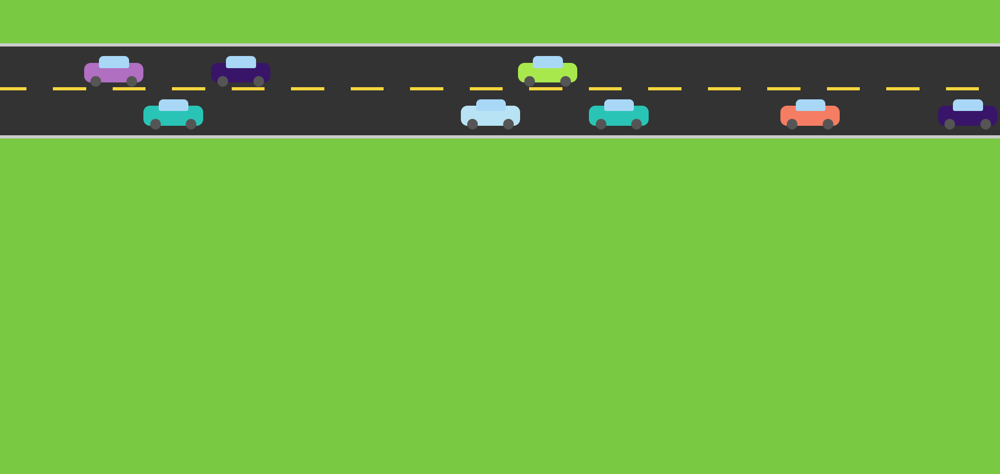
This assignment was to create a CSS-art road and used JavaScript to generate multiple cars with random colors and positions in different lanes. The assignment also uses arrow functions, loops, and functions with multiple parameters.
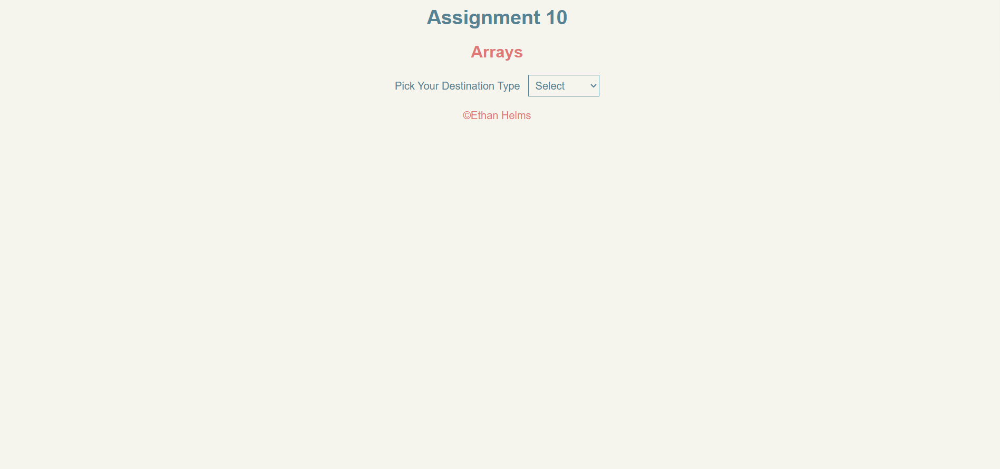
This assignment uses JavaScript associative arrays (objects) to display different travel destinations and their locations on Google Maps.
https://github.com/EthanH4106/autovault_backend https://autovault-backend-looe.onrender.com Created a basic Node.js Hello World server, uploaded the backend code to GitHub, and deployed it to Render for public access.
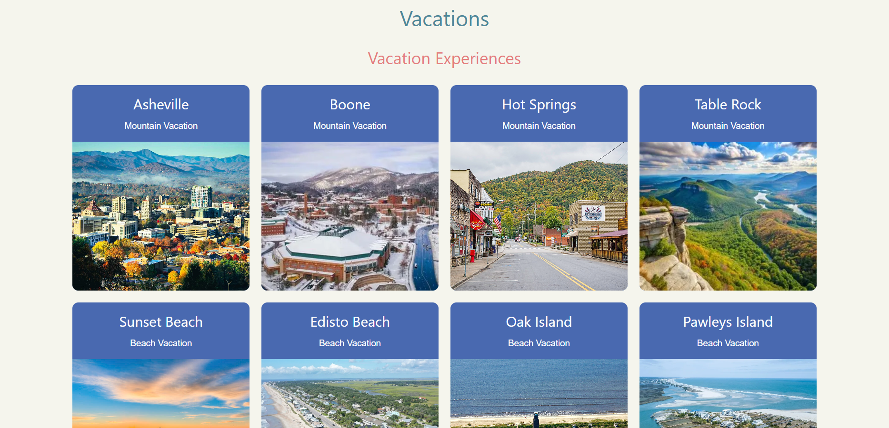
Created a vacation destination website using JavaScript classes and arrays. The project displays multiple vacation destinations with images and information, and clicking a destination opens a modal with its description, activities, type, and map. CSS was used to create a responsive and visually appealing layout.
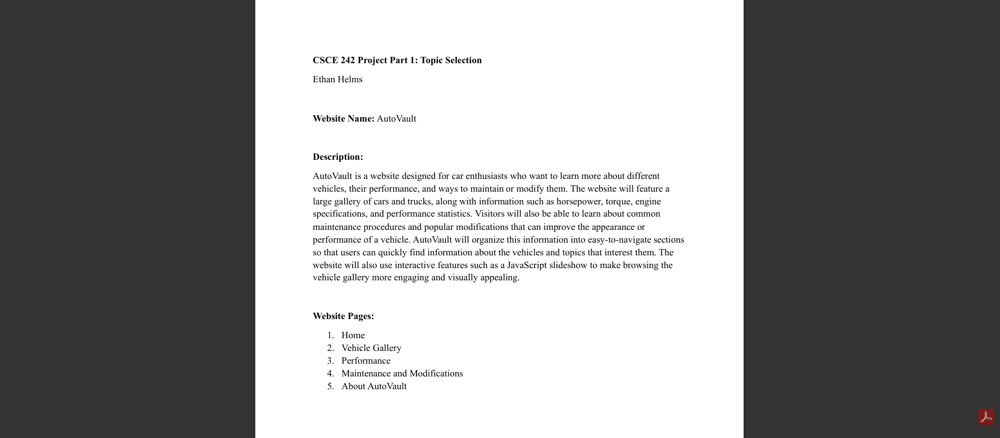
This project introduces the topic and overall idea for my website project. It describes what the website will be about and the type of information and content that will be included.
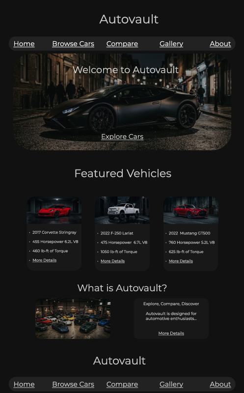
This project presents a wireframe for the homepage of my website. It outlines the structure and layout before implementing the actual design.
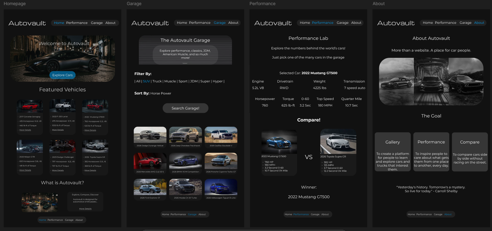
This project created a wireframe for AutoVault, a car enthusiast website featuring a homepage, gallery, performance, and about pages. The design uses a consistent automotive theme with dark backgrounds, blue accents, car imagery, and clear navigation.
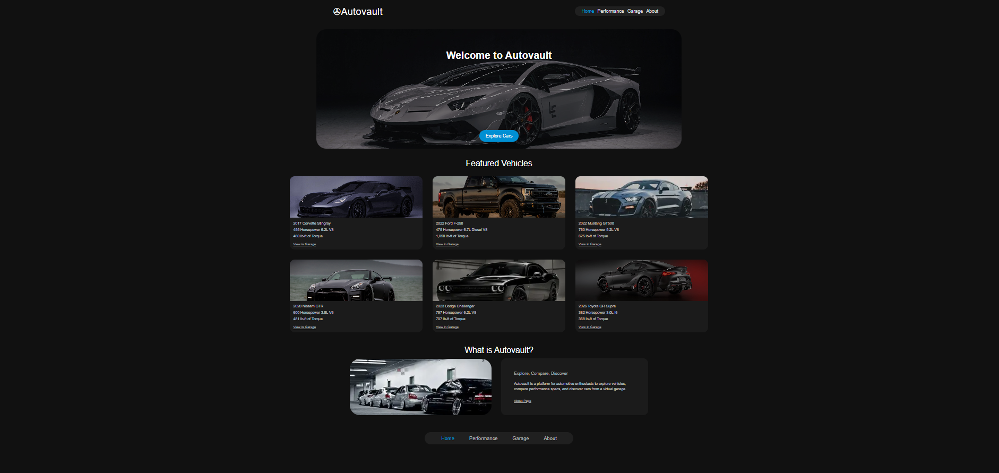
AutoVault is a car enthusiast website featuring a homepage, a vehicle gallery, a performance comparison page, and an about page, all designed with a consistent dark theme to help users explore, learn about, and compare cars.
In this project I looked at making small improvements to my website's design and functionality. This included adding a slideshow feature to the about page, improved responsiveness to multiple screen sizes, and other visual enhancements.